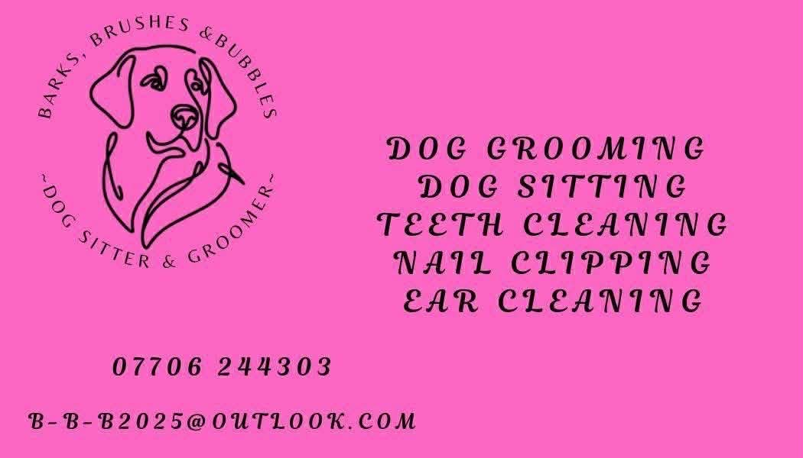
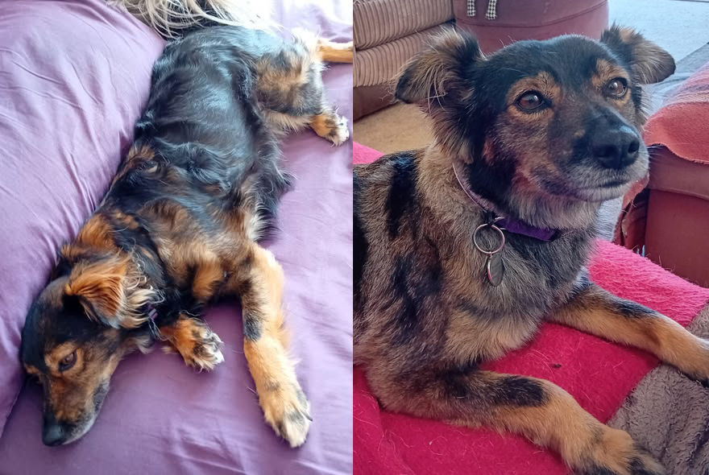

At Barks, Brushes & Bubbles, every dog is treated with patience, kindness, and genuine care. I understand that grooming can sometimes feel overwhelming for dogs, especially those who are nervous, anxious, elderly, rescued, or have had difficult experiences in the past. My aim is always to create a calm, safe, and positive grooming experience tailored to each individual dog.
As both a professional groomer and the owner of several rescue dogs myself, I have a real passion for working with dogs who may need extra time, reassurance, and understanding. I know that trust is earned, and I pride myself on building gentle, positive relationships with every dog that comes through my door.
I have experience working with nervous and rescue dogs of all breeds and temperaments, including dogs who may struggle with handling, noise sensitivity, or previous grooming trauma. Appointments are carried out at your dog's pace wherever possible, using calm handling techniques, reassurance, and plenty of patience to help them feel comfortable and secure.
Whether your dog simply needs a tidy-up, a full groom, help with de-matting, nail trimming, bathing, or ongoing coat maintenance, their welfare and comfort will always come first. My goal is not only to help dogs look their best, but to help them leave feeling relaxed, cared for, and happy to return.

I believe grooming should be a positive experience built on trust, compassion, and understanding - especially for those dogs who need a little extra support.
If you are looking for the perfect grooming experience for your rescue dog then you should really consider Barks, Brushes & Bubbles. Thank you and I look forward to welcoming both you and your dog.
Karen Johnson: 1 to 1 Groomer.
C&G Lvl 2 diploma in dog grooming
Canine health and first aid trained
Emmi pet teeth cleaning trained
07706 244303
B-B-B2025@outlook.com
Covering Torbay and the surrounding areas, further afield by arrangement only.